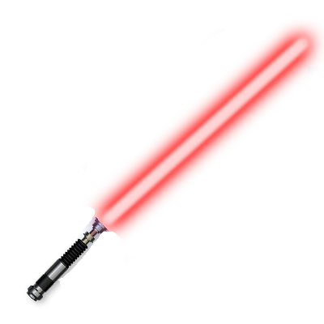

Has preset starting number of 4 different colors “dices”
minimum 1 maximum 3
Some of the hero profiles have also black but have fewer of
the standard ones
Each hero has a different setup with different strengths and
weaknesses
The amount of dice each hero can accumulate is different but
the space can be given as a reward as well
The black dice are given either for specific heroes (or
later as a reward)
Villain
Has random rectangles representing fighting points based on
4 colors
Each rectangle can be a size of 1-4 representing how many
dices maximum can be used to fight it.
A rectangle of 1 size number is between 1-6
The bigger rectangle range is multiplied by size:
Size 2 range 2-12
Size 3 range 3-18
Size 4 range 4-24
Start of The Game
Player chooses one of many Heroes to play for the whole game.
Start of Turn
The player automatically rolls the dice (or the roll dice
button can be introduced)
For example, at the start, the player's dice amount number
is 3 red, 1 blue, 2 green, 1 yellow. He rolls all the dice
at once
After the dice are rolled random number is given for each
dice between 1-6
In this example, player gets 3 red with numbers (5, 2, 4)
1 blue with number (5)
2 green with number (3, 6)
1 yellow with number (3)
player choice
The player uses rolled dice to match villains fighting
points
Example: villain has a red rectangle of 3 spaces with the
number 10 (possibly between 3-18) player uses his rolled
dices of red combined (5, 2, 4) to make 11 essentially
defending from villain with having more than required points
Also, the villain has a rectangle of blue of 2 spaces with
the number 7. Player uses blue dice he has of (5) to fill in
but he does not have enough blue dices to fill and match no
7 and having 5/7
villain also has the yellow square of 1 space with number 4
and the player can use his yellow dice of (3) to fight back
making ¾
Every point that is not filled at the end of the turn is
deducted from the player's hitpoints in this example 5/7
blue score player would lose 2 life points plus ¾ player
would lose 1 life point.
For every fighting point fight player gets a point for his
high score in total 11/10 = 10 points, 5/7= 5 points,¾ = 3
points, total 18 points
Additionally every point that is over the limit rewards
double points 11/10 = 1 over limit = 2 extra points.
Total high score points 20
Finally, the villain has no green fight points, and since
the player has 2 green leftover dice of (3, 6) he has few
choices:
Either keep the dices and use it on the next game round,
essentially having next turn 4 green dices, 2 from round 1
and 2 from round 2
The player also can choose to throw 2 dice into a bucket and
get the average (lowered down) number of both dice in black
color For Example (3, 6) green would turn into (4) black,
(see below for black dice)
With (4) black, in hand player has now a choice to use it
maybe instead of yellow or add it extra to blue making 4/4
yellow, and save yellow dice for a later round or 5+4/7 for
blue making 9/7, in both cases saving some life points and
earning extra points
Black dice
The bucket can take any mix-or-match colors, not necessarily
2 of the same color. For example, you can mix one blue and
one red and get black dice instead.
Black dice are more valuable because they can be used on any
color, unlike others that have to match. Black would also be
able to use in the buckets to turn into another black. For
example, you can throw in tho a bucket (1) black and (6) red
to get (3) black and use it to cover some space that
requires 3 or 2
End of round
Once a player has made all decisions he can end round and
this happens:
All high score points are calculated as per the previous
explanation
The reward is given to a player. The choices should be made
at this point regarding what reward the player can take of
either: of 3 choices
2 standard color dices (chosen at random, some opponents
have bigger chances for specific colors)
1 additional space for dice storage (chosen random color out
of all 5 colors)